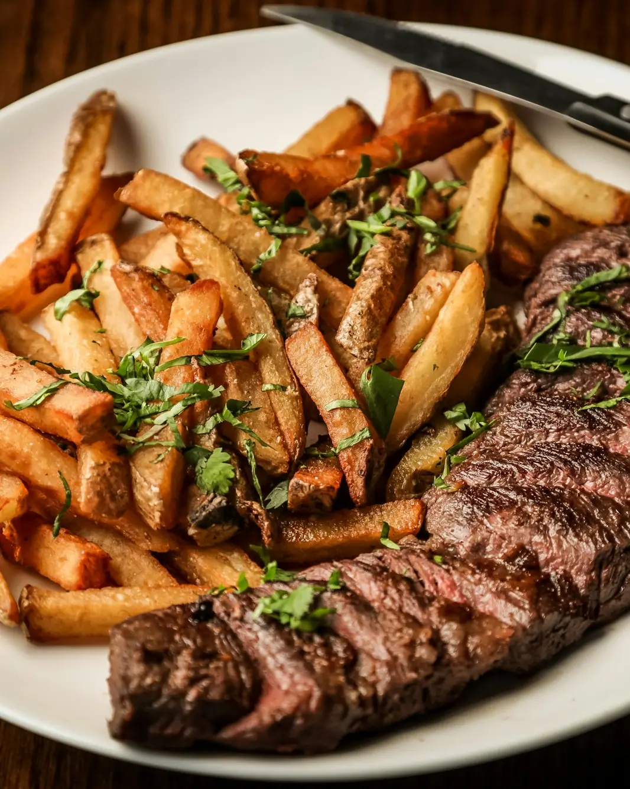
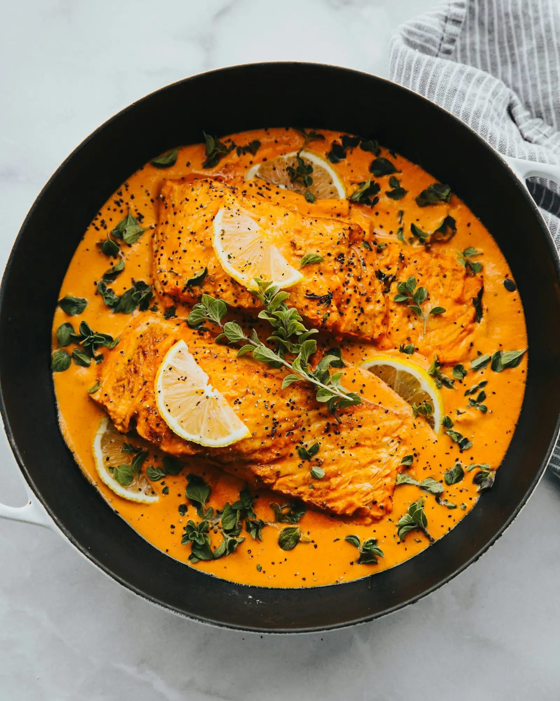
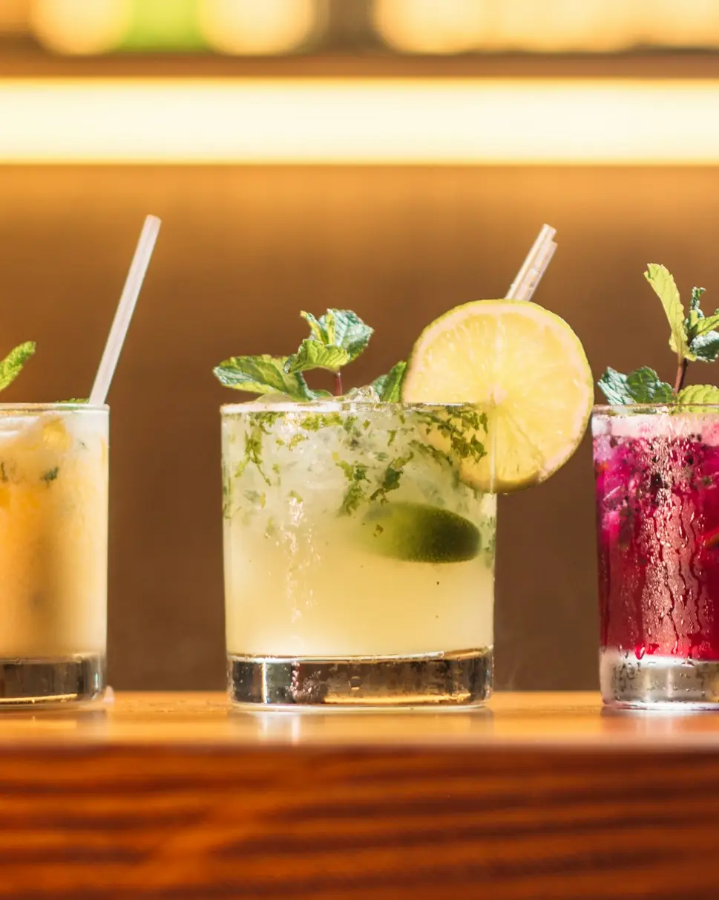
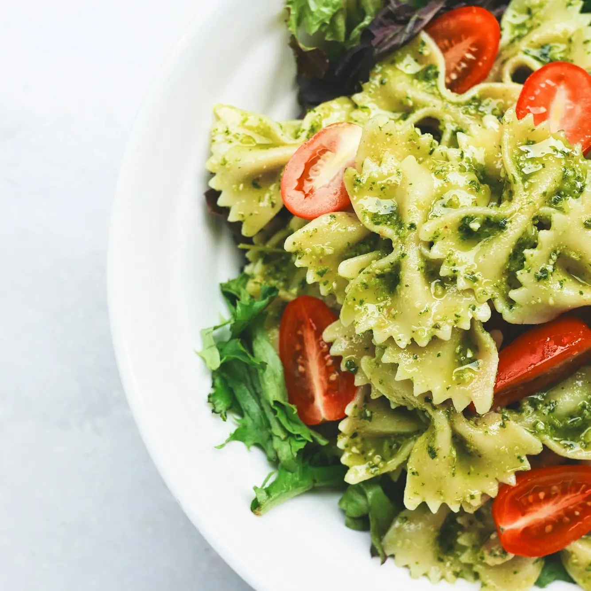
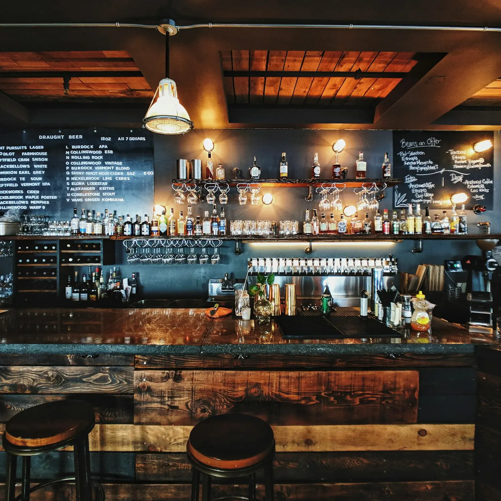
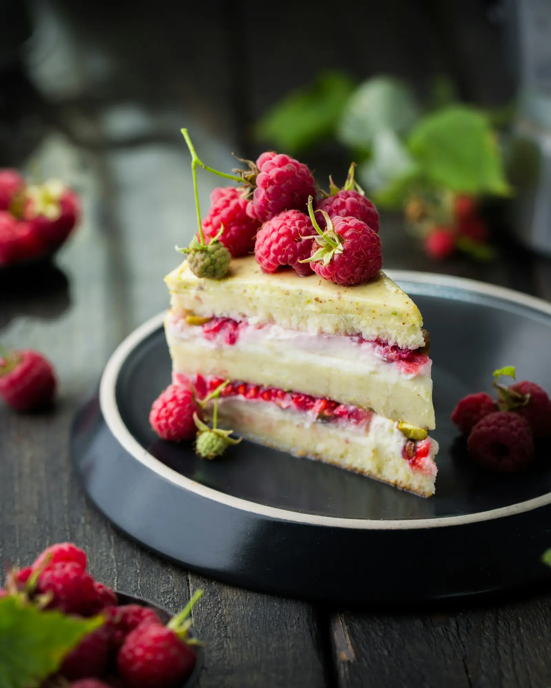
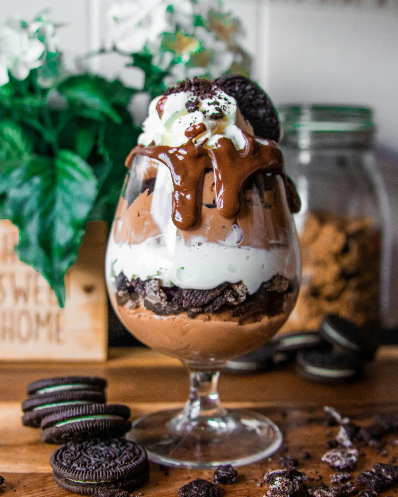
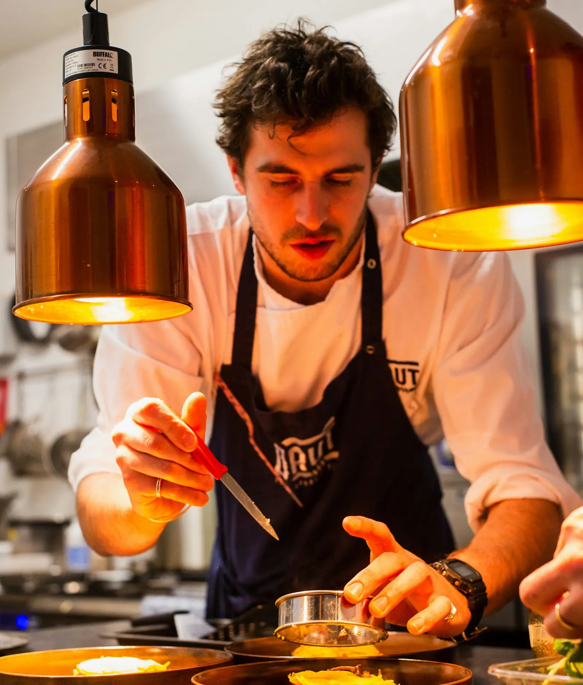

Une cuisine de saison, servie comme à la maison.
Des produits du marché Saint-Antoine, des sauces montées à la minute et des recettes transmises de génération en génération, au cœur de la Presqu'île.
Ouvert du mardi au samedi, midi et soir


CuisineVoir la carte
BarVoir les cocktails
Le déjeuner
Une formule courte qui change chaque semaine selon les arrivages : une entrée, un plat, un dessert, servis en moins d'une heure pour ceux qui retournent au bureau.
Entrée + plat ou plat + dessert29 €
Le dîner
Le soir, la salle se fait plus intime. Le chef propose un menu en cinq temps et une carte courte, à accorder avec les vins de la cave.
Menu dégustation en cinq temps68 €



Pour finir en douceur
Tartes du jour, entremets et la praline rose de la maison, travaillés par notre pâtissière.
Carte des dessertsMaison de famille depuis 1924
Tout commence avec Aurèle, cuisinière de bouchon, qui servait les ouvriers de la soierie. Son petit-fils a gardé les murs, le zinc et la recette du gratin, et y a ajouté une cave.
Aujourd'hui, la quatrième génération travaille avec les mêmes maraîchers des Monts du Lyonnais et un boucher installé à deux rues d'ici. La carte change avec les saisons ; l'accueil, lui, n'a jamais changé.
